1. 课前：MinIO 是什么，这里为什么用，怎么用
MinIO 是什么
MinIO 是一个专门存文件的服务，这类服务叫「对象存储」。它不像 MySQL 那样有表和列，只做两件事：给一个名字，存一个文件；给同一个名字，把文件取回来。
- 对象：存进去的一个文件，连同它的名字。
- key：对象的名字，例如
inbound/IN-1/05b76f54-…-29e811b20b70.txt。斜杠只是名字里的一个字符，控制台把它显示成一层层的文件夹，方便看。 - 桶（bucket）：装对象的大筐，key 在一个桶里不能重复。这个项目只用一个桶
wms，第一次上传时代码自己建。
它的接口和 Amazon S3 一样。阿里云 OSS、腾讯云 COS 这类云上的对象存储也是「桶 + key」这一套，以后换成它们，代码的思路不变。
这个项目里为什么要用
入库时要留收货单、到货照片。文件放在哪，有三种选择：
| 后端所在机器的磁盘 | MySQL 表里（存成二进制） | MinIO | |
|---|---|---|---|
| 放在哪 | 运行后端的那台机器 | 数据库 | 单独的文件服务 |
| 后端换一台机器、同时跑好几台 | 只有写进去的那台能读到 | 都能读到 | 都能读到 |
| 对数据库的影响 | 没有 | 文件越多，表和备份越大，查询越慢 | 没有 |
| 表里记什么 | 这台机器上的绝对路径 | 文件本身 | key |
第五、第六部分后端要放进容器、部署到 Linux，容器一重建，里面的磁盘就是新的。所以文件交给 MinIO，inbound_attachment 表里只记原文件名和 key，找文件靠 key。
把 MinIO 跑起来
- 老师电脑：MinIO 在 Docker 里，
docker compose -f docker-compose.dev.yml up -d minio。 - 学生电脑（Windows）：MinIO 官方已经不再提供安装包，用社区继续维护的版本 Silo，命令、端口、账号和 MinIO 一样。
- 到 github.com/pgsty/silo/releases 最新的版本里下载
silo_…_windows_amd64.zip，解压出silo.exe，例如放到D:\minio。 - 建一个放文件的目录，例如
D:\minio-data。 - 打开命令行：
cd D:\minio silo.exe server D:\minio-data --console-address :9001
窗口里出现API: … :9000和WebUI: … :9001就起来了。这个窗口不要关，关了 MinIO 就停了。 - 浏览器打开
http://localhost:9001，用minioadmin/minioadmin登录。窗口里会提示「用的是默认账号密码，建议修改」，本机上课不用管。
- 到 github.com/pgsty/silo/releases 最新的版本里下载
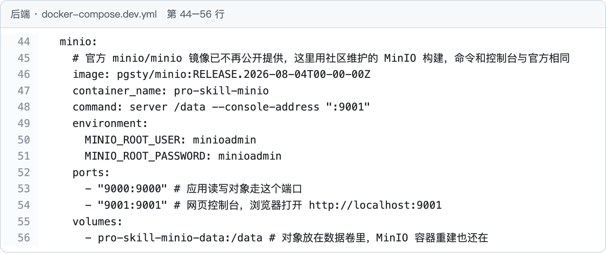
docker-compose.dev.yml。第 46 行是镜像，就是上面说的社区版本。第 48 行启动服务，文件放在容器里的 /data，和你命令行里的 D:\minio-data 是一回事。第 50–51 行是登录账号和密码，不写也是 minioadmin。第 53 行 9000 端口给程序读写文件，第 54 行 9001 端口是网页控制台。第 56 行把 /data 放进数据卷，MinIO 容器重建，文件还在。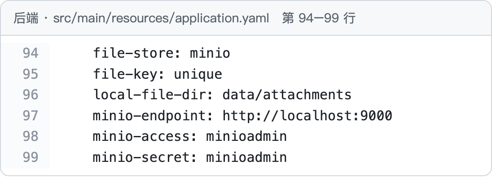
application.yaml。第 97 行连 http://localhost:9000，第 98–99 行是账号密码。老师的 Docker 和你的 silo.exe 都在本机 9000 端口，这几行不用改。第 94–95 行是这一部分的两个开关，见下面。怎么用
- 控制台：左边 Object Browser →
wms，一层层点进去就能看到每个文件，可以直接下载、删除。上课用它对照表里的 key。 - 代码：只用两个动作，存（
putObject）和取（getObject），都写在MinioObjectStore里。业务代码调的是接口ObjectStore的put、get，测试时换成内存里的MemoryObjectStore，跑测试不用开 MinIO。
这一部分的开关
每个问题留一个开关，默认都是正确的写法。老师上课把一个开关拨到另一侧，演示不这么写会出什么错。改法：在 IDEA 运行配置的 Program arguments 里加，然后重启后端。
| 开关 | 默认（正确） | 拨到另一侧（演示问题） | 案例 |
|---|---|---|---|
file-store | minio：放进 MinIO，表里记 key | local：写在后端所在机器的磁盘上，表里记绝对路径 | 第 4 节 |
file-key | unique：存放时换成随机名 | filename：直接用页面上的文件名 | 第 5 节 |
前端切到「第四部分」，入库页的单子下面多了「附件」一块：选文件、上传、下载，表格里能看到每个附件存在哪。
2. 案例：给 IN-1 传一张收货单
案例：入库单 IN-1 到了 10 个 SKU-003，仓管员把收货单 收货单.txt 传上去，之后谁都能把它下载下来看。
数据怎么走：页面选的文件 → POST /inbound-orders/1/attachments（表单字段 file）→ InboundAttachmentController.upload → AttachmentService.upload 起名字、放进 MinIO 桶 wms → InboundAttachmentMapper.insert 往 inbound_attachment 写一行：order_id 是 1，file_name 是原名，file_path 是 key。
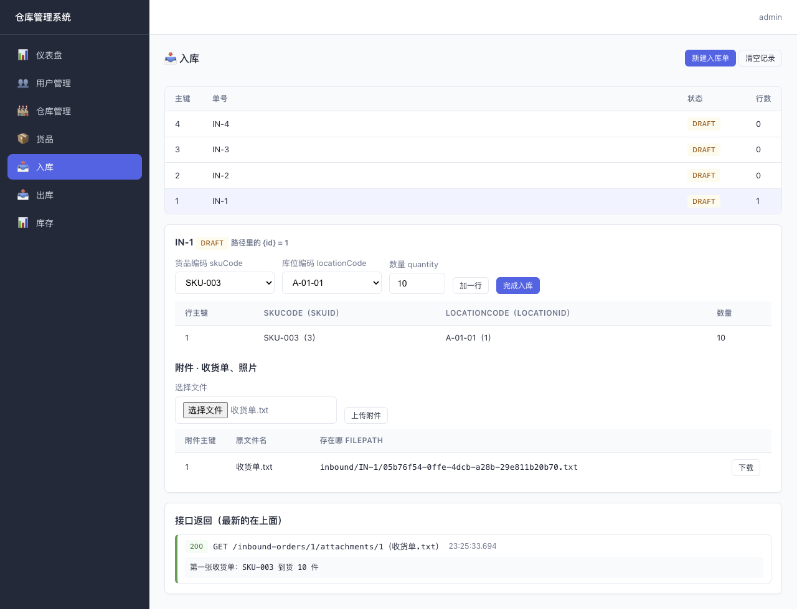
收货单.txt，存在 inbound/IN-1/05b76f54-…-29e811b20b70.txt。点「下载」，下面「接口返回」里是文件内容。前端：发一个表单
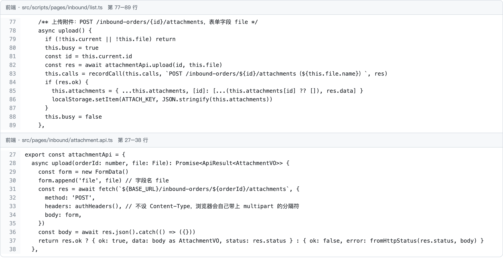
list.ts：第 81 行取当前入库单的主键，第 82 行把它和选的文件交给 attachmentApi.upload；第 84–87 行成功后把返回的附件记进表格，并存到浏览器 localStorage，刷新后还在（后端没有「列出附件」的接口）。下面是 attachment.api.ts：传文件不能用 JSON，第 29–30 行装进 FormData，字段名 file 必须和后端一致；第 31 行发 POST /api/inbound-orders/1/attachments；第 33 行只带登录的 token，不写 Content-Type，浏览器会自己加上表单格式和分隔符。Controller：从表单里拿出文件
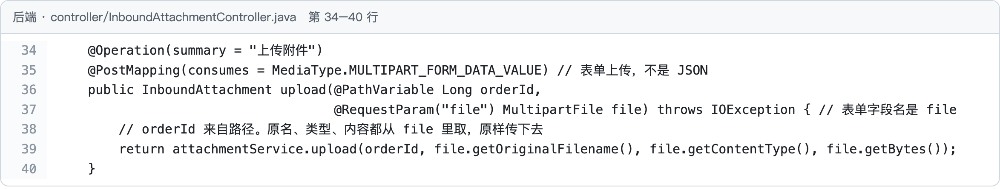
InboundAttachmentController。第 35 行只收表单上传。第 36 行 orderId 来自路径里的 1，第 37 行 @RequestParam("file") 取表单字段 file。第 39 行把原名、类型、内容原样交给 Service，Controller 不管文件存到哪。Service：起名字、放进 MinIO、写表
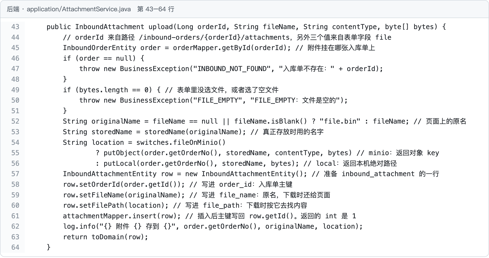
AttachmentService.upload。第 45 行按主键查入库单，查不到第 47 行报 INBOUND_NOT_FOUND；第 49–51 行没选文件报 FILE_EMPTY。第 52 行 originalName 是页面上的原名 收货单.txt；第 53 行 storedName 是真正存放用的名字（第 5 节讲）。第 54–56 行按开关决定放哪：默认 minio 调 putObject，返回 key。第 57–60 行准备 inbound_attachment 的一行：order_id 写入库单主键，file_name 写原名，file_path 写 key。第 61 行插入，返回的 int 是 1，新主键写回 row.getId()。第 63 行返回给页面。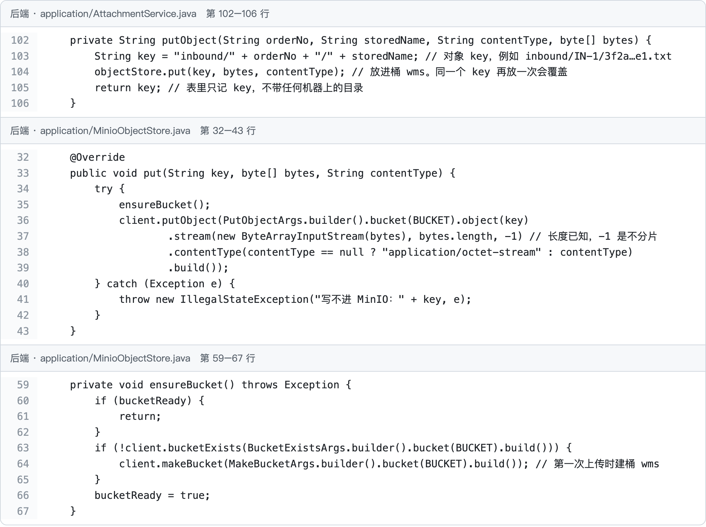
putObject：第 103 行拼 key，inbound/单号/存放名；第 104 行放进桶；第 105 行只把 key 返回，不带任何机器上的目录。第二段 MinioObjectStore.put：第 35 行确保桶在；第 36–39 行就是 MinIO 的 putObject：桶 wms、对象名 key、文件内容和类型。第三段：第 63–64 行桶 wms 不在就建一个，所以你不用在控制台里手动建。Mapper：表里只记 key
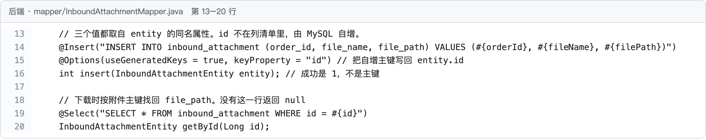
InboundAttachmentMapper。第 14 行三个值 #{orderId}、#{fileName}、#{filePath} 来自上面 Service 第 58–60 行放进 entity 的值，写进 order_id、file_name、file_path 三列；第 15 行把自增主键写回 entity；第 16 行返回 1。第 19 行是下载时用的：按附件主键查回这一行。对照数据库和 MinIO
在你自己的 MySQL 工具里执行：
SELECT id, order_id, file_name, file_path FROM inbound_attachment
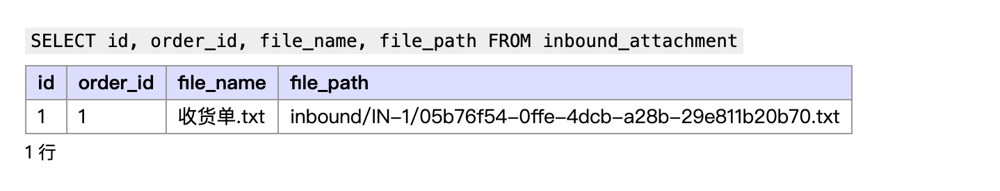
order_id 1 是 IN-1，file_name 是原名，file_path 是 key。文件本身不在 MySQL 里。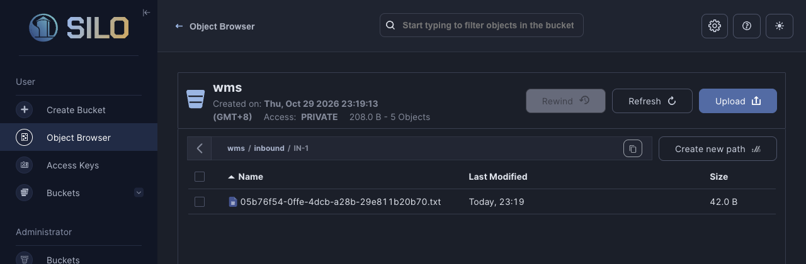
wms → inbound → IN-1：一个对象，名字就是表里 file_path 的最后一段。文件在这里。3. 下载：按表里记的位置取回来
数据怎么走：点「下载」→ GET /inbound-orders/1/attachments/1 → Service 按附件主键 1 查出 file_path → 拿 key 到 MinIO 取内容 → 响应体就是文件，响应头带上原名。
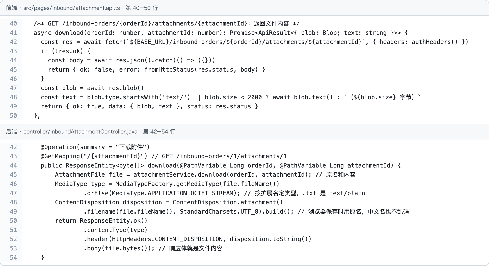
attachment.api.ts：第 42 行发 GET；失败时第 44 行响应是 JSON 错误，成功时第 47 行响应是文件本身，取成 blob。下面是 InboundAttachmentController.download：第 45 行从 Service 拿到原名和内容；第 46–47 行按扩展名定类型，.txt 是 text/plain；第 48–49 行 Content-Disposition 带上原名，浏览器保存时还叫 收货单.txt，中文名不乱码；第 53 行响应体就是文件内容。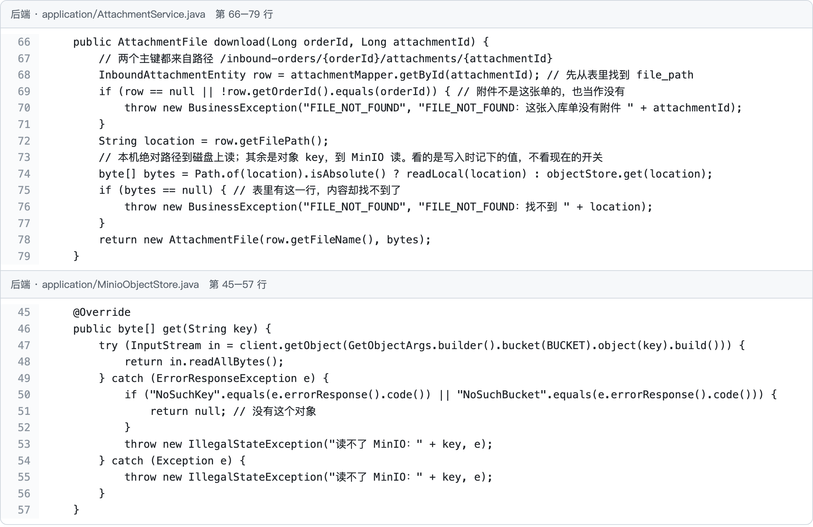
AttachmentService.download。第 68 行按附件主键查出这一行；第 69–71 行附件不是路径上这张单的，当作没有。第 72 行取出 file_path；第 74 行看它是不是本机绝对路径：是就到磁盘上读，不是就当 key 到 MinIO 读。看的是上传时记下的值，不看现在的开关，所以开关改过以后，以前传的附件还是去原来的地方找。第 75–77 行找不到内容，返回 FILE_NOT_FOUND。下面 MinioObjectStore.get：第 47 行 MinIO 的 getObject；第 50–51 行没有这个对象返回 null。4. 问题一：文件存在后端那台机器的磁盘上
最直接的写法：后端把文件写到自己所在机器的一个目录里，表里记下绝对路径，下载时按路径去读。在一台电脑上试，一切正常。
漏洞：表在 MySQL 里，所有后端都能看到；文件却只在写它的那台机器上。后端换了机器、重建了容器、或者同时跑了两台，表里的路径还在，文件已经不在那里，下载失败。
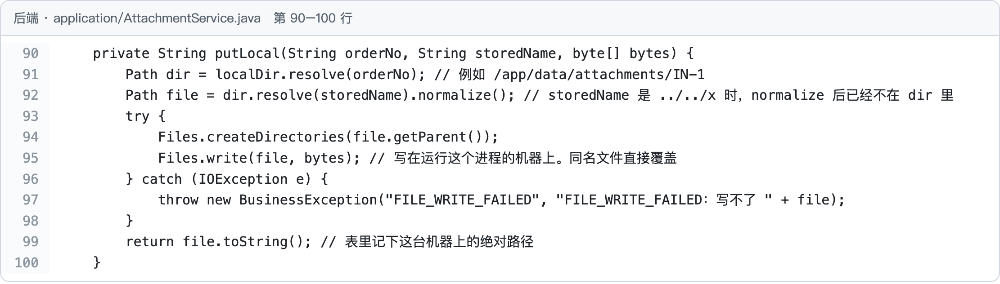
file-store=local 时走的 putLocal：第 91 行目录是项目下的 data/attachments/单号；第 95 行写进这台机器的磁盘；第 99 行把这台机器上的绝对路径写进表。演示：
- 启动参数加
--app.lesson.file-store=local，重启后端。新建入库单 IN-4，上传收货单.txt，表格里filePath是本机绝对路径，下载正常。 - 模拟「后端换了一台机器」：把项目下的
data/attachments目录改个名字。 - 去掉参数重启（回到默认的
minio），在 IN-4 上再传一次收货单.txt，这次filePath是 key。 - 两个附件都点「下载」。
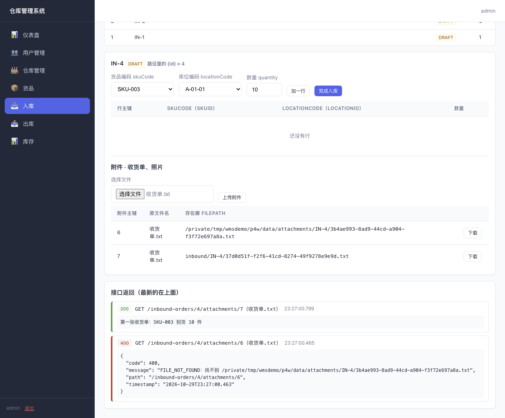
local 时传的，记的是本机绝对路径：返回 400 FILE_NOT_FOUND，表里的路径还在，文件已经不在了。附件 7 是 minio 时传的，记的是 key：照样 200，内容一字不差。MinIO 是单独的服务，后端在哪台机器上都连得到它。正确写法：就是第 2 节的 putObject：文件放进 MinIO，表里只记 key，不记任何机器上的目录，也不记带主机名的地址（例如 http://localhost:9000/wms/…），主机一换地址就错。
演示完把 data/attachments 改回原名。
5. 问题二：用页面上的文件名存放
最直接的写法：页面传来叫什么，就用什么名字存，key 是 inbound/IN-3/收货单.txt。
漏洞：文件名是用户起的，同一张单上传两次 收货单.txt 很常见。key 一样，MinIO 里后一个直接盖掉前一个，表里两行却指向同一个对象。
演示：启动参数加 --app.lesson.file-key=filename，重启后端。新建入库单 IN-3，先传一个 收货单.txt（内容「第一张收货单：SKU-003 到货 10 件」），再传一个同名的（内容「第二张收货单：SKU-003 到货 5 件」），然后两个都下载。
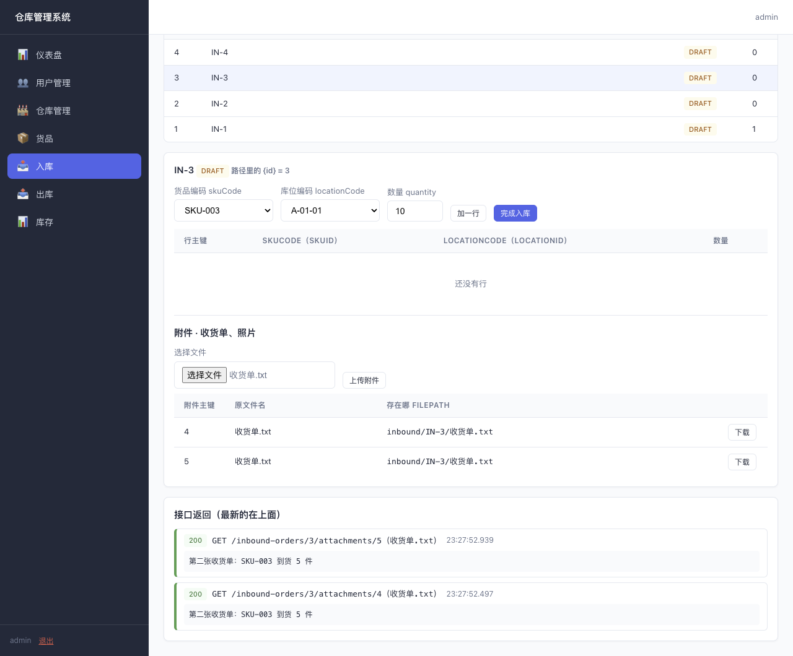
file-key=filename：附件 4、5 的 filePath 一样。下载附件 4 拿到的是「第二张收货单」，第一张已经没了。两次都是 200，页面上看不出出了错。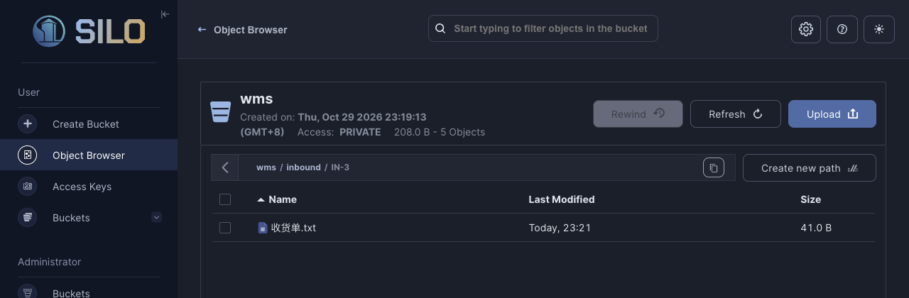
inbound/IN-3/ 下只有一个 收货单.txt：传了两次，只剩一个对象。正确写法：存放名换成随机名，原名另外记
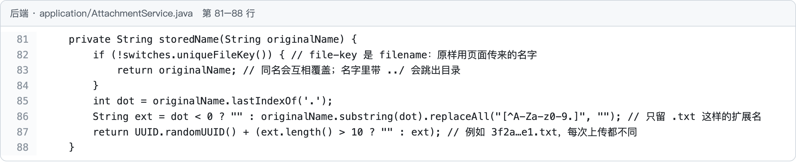
AttachmentService.storedName。第 82–84 行是 filename：原样返回页面上的名字。默认 unique 走第 85–87 行：只留扩展名（如 .txt），前面换成 UUID，每次上传都不一样。原名不丢：第 2 节 Service 第 59 行把它写进 file_name，下载时第 3 节 Controller 第 48–49 行把它放进响应头还给浏览器。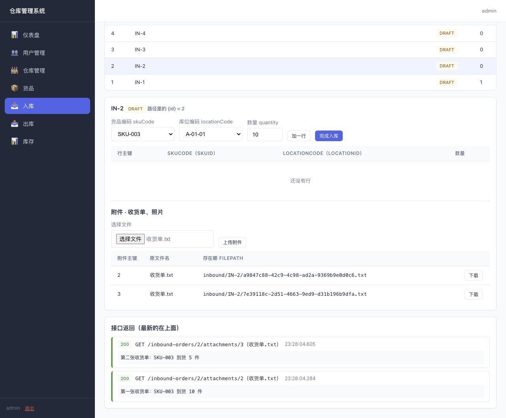
unique：IN-2 同样传两次 收货单.txt，两个 key 不一样，下载各拿各的。原文件名两行都还是 收货单.txt。在你自己的 MySQL 工具里执行 SELECT id, order_id, file_name, file_path FROM inbound_attachment ORDER BY id，把两个问题对照着看：
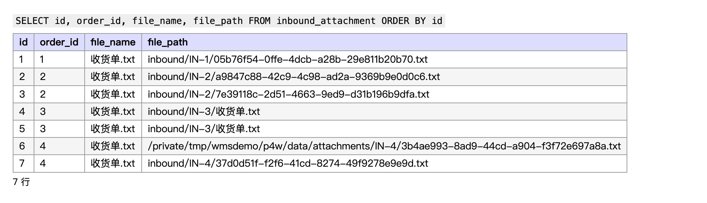
file_path 一样（问题二）；第 6 行是本机绝对路径（问题一）；其余都是 inbound/单号/随机名，这是正确的样子。用原名存放还有一个问题：文件名里带 ../ 时，local 写法会写到附件目录外面去。随机名只留扩展名，这个问题一起没了。测试里有这个例子，见下一节。
6. 剩下的自己看
| 内容 | 代码在哪 |
|---|---|
| 附件表 | db/migration/V14__create_inbound_attachment.sql |
| 存、取文件的接口和测试用实现 | ObjectStore、MemoryObjectStore |
| 附件不属于路径上的入库单时 | AttachmentService.download 第 69–71 行 |
两条路径的测试（含 ../ 文件名） | AttachmentDefectPathTest、AttachmentFixedPathTest，开关写在测试类上 |
| 不用页面试接口 | 后端启动后打开 http://localhost:8080/swagger-ui.html，「入库附件」下两个接口 |
7. 作业里存文件时
- 文件放对象存储，表里只记 key 和原文件名，不记本机路径，也不记带主机的完整地址。
- 存放名由后端生成（UUID 或主键），不要直接用用户传来的文件名；原名下载时放进
Content-Disposition还给浏览器。 - key 按业务分层，例如
inbound/单号/随机名，控制台里好找，也方便按单清理。 - 下载前确认附件属于路径上的那条业务数据。